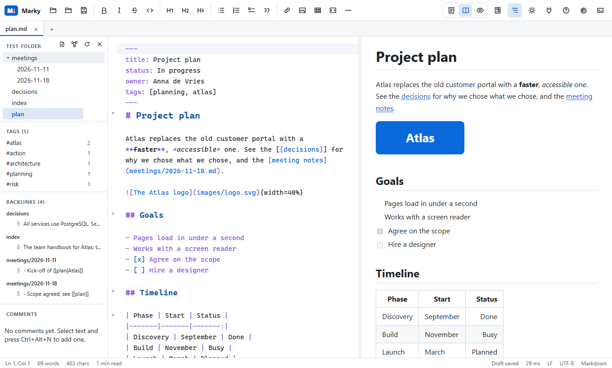
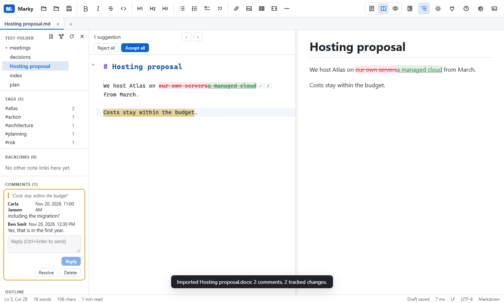

5. Files and folders
Notes and tabs
| Action | Keys |
|---|---|
| New note | Alt+N |
| Open a file | Ctrl+O, or drag a .md file onto the window |
| Open a folder | Ctrl+Shift+O |
| Go to a note in the folder | Ctrl+P |
| Save, Save as, Save all | Ctrl+S, Ctrl+Shift+S, Ctrl+Alt+S |
| Close the tab; next and previous tab | Alt+W; Alt+PgDn, Alt+PgUp |
Each tab keeps its own undo history, cursor and scroll position. Closing a tab with unsaved changes asks Save, Don't save or Cancel.
Line endings (LF or CRLF) and a UTF-8 byte-order mark are kept as they were; the status bar shows them. A file in another encoding (UTF-16, Windows-1252) opens read-only so saving can't damage it; Save as makes a UTF-8 copy.
The open folder

The sidebar shows the folder's Markdown notes as a tree. Pictures in the folder load in the preview; links to other notes open them in a tab.
- New note: the + button in the Files panel, or New note in folder….
- Rename: ✎ or F2. An open note's tab follows, unsaved changes included; links to it can be updated, and its comments come along.
- Delete: × or Del. Desktop: to the Recycle Bin. Web: browsers have no Recycle Bin, so Marky asks first.
- Changes by other programs: a note that changes on disk reloads by itself when you haven't edited it. If you have, a banner offers Compare, Keep my version or Reload from disk.
Web: Chrome and Edge can save into the folder you open; other browsers open a read-only copy.
Search in the folder
Ctrl+Shift+F searches every note in the folder, including unsaved changes in open tabs. The buttons next to the box switch on match case (Aa), whole word (ab) and regular expressions (.*). Click a result to open the note at the match. Replace all asks first; open notes get one change you can undo.
Contents that keep themselves up to date
Type /contents (or Insert contents) for a list of the headings below it. Saving keeps it up to date. It sits between <!-- toc --> and <!-- tocstop -->, the markers other tools use too. <!-- toc max=4 --> includes deeper headings; a heading ending in <!-- omit in toc --> is left out.
Git (desktop)
In a Git repository, the Git panel shows changed notes (with a letter in the file tree: M changed, A added, U new), lets you write a message and Commit, and Sync (pull and push). The status bar shows the branch.
Sync conflict copies
OneDrive, Dropbox, iCloud and Syncthing sometimes keep two versions of a note (Plan (conflicted copy …).md, Plan-LAPTOP.md). Sync conflict copies… lists them and compares each with the note: take changes over with the arrows, save the note, then remove the copy.
Importing a Word document
Import Word document (.docx)… turns a Word file into a note:
- headings, bold, italic, strikethrough, links, bulleted and numbered lists (nested), tables, footnotes and pictures;
- Word's tracked changes become suggestions in the reviewer's name (Reviewing);
- Word's comments become comment threads on the same text, with their replies and whether they were resolved.
With a folder open, the note is saved in the folder (pictures in assets/, comments beside it). Without one, it opens as a new note with the comments written into the text as ``.

Encrypted notes
Notes ending in .md.age are encrypted and open with a passphrase. See Your work is safe.